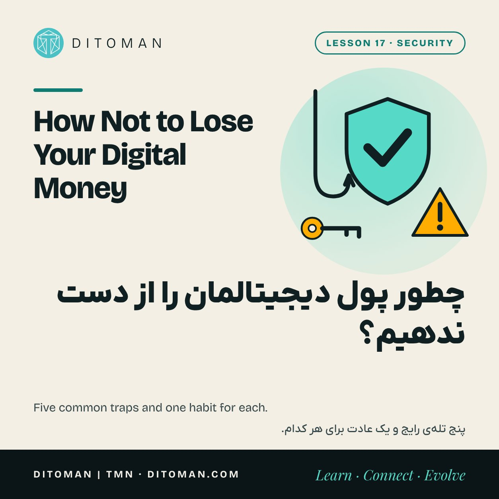
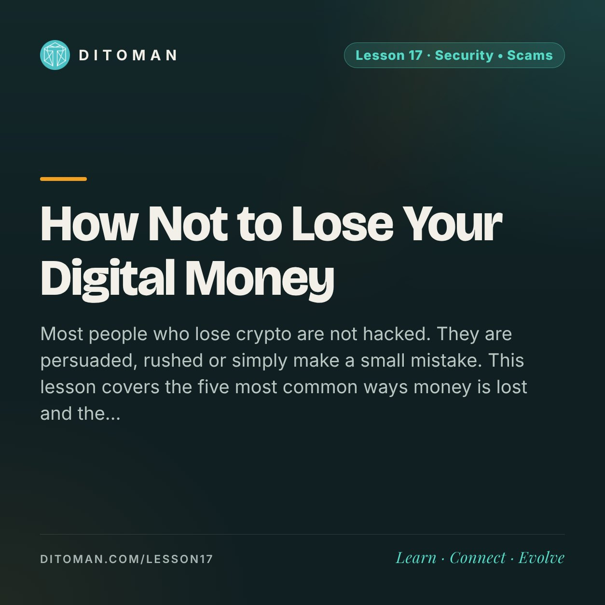

How Not to Lose Your Digital Money
چطور پول دیجیتالمان را از دست ندهیم؟
Most people who lose crypto are not hacked. They are persuaded, rushed or simply make a small mistake. This lesson covers the five most common ways money is lost and the plain habits that stop each one.
بیشتر کسانی که کریپتو از دست میدهند هک نمیشوند. قانع میشوند، عجله میکنند یا فقط یک اشتباه کوچک میکنند. این درس پنج راه رایج از دست رفتن پول و عادتهای سادهای را که جلوی هر کدام را میگیرد مرور میکند.
Lesson Content
محتوای درس
Read the lesson in English or Persian.
درس را به فارسی یا انگلیسی بخوانید.
When people imagine losing crypto, they picture a hacker in a dark room breaking a code. That is rarely how it happens. In most cases the owner opens the door personally: by typing a phrase into a fake page, approving something without reading it, or sending money to a new "friend".
Lesson 16 explained why this matters so much: a blockchain transfer cannot be reversed. A bank can sometimes pull money back. A blockchain cannot. So prevention is the whole game, and the good news is that prevention is mostly a matter of habit.
How big is the problem
The analytics firm Chainalysis estimated that crypto scams took more than 17 billion dollars from victims in 2025, a record. Scams where criminals pretend to be someone else, such as an official, a company or a support agent, grew by more than 1,400 percent in a year, helped by artificial intelligence tools that make fake voices, faces and messages convincing.
Those numbers are not a reason for fear. They are a reason to learn five patterns.
1. The fake page (phishing)
You receive a link that looks like your wallet, your exchange or a token's website. The page is a copy. It asks you to log in or to "verify" your wallet by entering your recovery phrase. The moment you do, the wallet is empty.
The habit: never follow links from messages, ads or search results to anything that holds money. Type the address yourself or use a saved bookmark. And remember the rule from Lesson 13: nobody legitimate ever asks for a recovery phrase.
2. The fake helper
You ask a question in a public group. Within a minute a "support agent" writes to you privately, kindly offering to fix it. They ask for your phrase, your screen or a small "verification" payment.
The habit: real support does not start private chats. Anyone who contacts you first is a stranger, whatever their profile picture says.
3. The blind signature
Many apps ask your wallet to sign an approval. Some approvals give a contract permission to move your tokens, sometimes without limit and without an end date. A fake airdrop or a "free mint" site uses exactly this: you think you are claiming a gift and you are signing away access.
The habit: read what the wallet asks you to sign. If you do not understand it, reject it. Keep a separate wallet with small amounts for trying new sites, and never connect the wallet that holds your savings.
4. The patient friend
Someone friendly appears on a social app or a dating site. Weeks of pleasant conversation follow. Then they mention an investment that is doing wonderfully and show you how to join. The platform shows growing profits. When you try to withdraw, there are "taxes" and "fees" to pay first. The profits were never real.
The habit: an online acquaintance who steers you towards an investment is following a script. Stop there, and talk to someone you know in person before sending anything.
5. The guaranteed return
A project promises a fixed, high return, paid daily or weekly, with bonuses for bringing in friends. Early members really are paid, with money from later members. When new deposits slow, it stops.
The habit: in finance, a high return with no risk does not exist. Ask where the money comes from. If the honest answer is "from new members", it is a pyramid.
| If someone… | It is probably… | Do this |
|---|---|---|
| asks for your recovery phrase | theft | Stop. Nobody needs it. |
| messages you first as 'support' | a fake helper | Use only the official site. |
| says you must act right now | pressure to stop you thinking | Wait one day. |
| promises a fixed high return | a pyramid | Ask where the money comes from. |
| offers a free token to 'claim' | a signature trap | Do not connect your main wallet. |
The honest mistakes
Not every loss involves a criminal. People also lose money by sending on the wrong network, pasting the wrong address, or losing the paper with their recovery phrase. Lessons 13 and 16 cover those, and the habit is the same in each case: slow down, check twice, test with a small amount.
One newer trick sits between mistake and scam. A scammer sends a tiny amount from an address that starts and ends like one you use. Later you copy that look-alike address from your history instead of the real one. So copy addresses from the source, not from past transactions.
If it has already happened
Move anything that is left to a new wallet with a new recovery phrase. Save the transaction hashes and the messages. Report it to the platform involved and to the police in your country.
Then be careful a second time. People who have been robbed are often contacted by "recovery services" that promise to get the money back for an upfront fee. That is the same crime, repeated.
What to take from this
Most losses start with persuasion, not hacking.
Five patterns cover most cases: fake page, fake helper, blind signature, patient friend, guaranteed return.
Urgency is the common thread. A real opportunity survives one day of thinking.
Never share a recovery phrase, never sign what you cannot read, never follow a link to your money.
If something goes wrong, secure what remains, keep the evidence and ignore anyone selling recovery.
وقتی به از دست دادن کریپتو فکر میکنیم، هکری در اتاقی تاریک به ذهن میآید که رمزی را میشکند. کمتر پیش میآید که اینطور باشد. در بیشتر موارد خودِ صاحب پول در را باز میکند: عبارتی را در یک صفحهی جعلی وارد میکند، چیزی را نخوانده تأیید میکند یا برای یک «دوست» تازه پول میفرستد.
درس ۱۶ توضیح داد چرا این موضوع اینقدر مهم است: انتقال روی بلاکچین برگشت ندارد. بانک گاهی میتواند پول را برگرداند، بلاکچین نمیتواند. پس همهچیز به پیشگیری برمیگردد و خبر خوب این است که پیشگیری بیشتر یک عادت است.
مسئله چقدر بزرگ است
شرکت تحلیلی Chainalysis برآورد کرده که کلاهبرداریهای کریپتویی در سال ۲۰۲۵ بیش از ۱۷ میلیارد دلار از قربانیان گرفتهاند؛ یک رکورد. کلاهبرداریهایی که در آن فرد خودش را جای کس دیگری میزند، مثل مأمور، شرکت یا پشتیبانی، در یک سال بیش از ۱۴۰۰ درصد رشد کرده است. ابزارهای هوش مصنوعی هم که صدا، چهره و پیام جعلی را باورپذیر میکنند به این رشد کمک کردهاند.
این عددها دلیلی برای ترس نیستند. دلیلیاند برای یاد گرفتن پنج الگو.
۱. صفحهی جعلی (فیشینگ)
لینکی میرسد که شبیه کیف پول، صرافی یا سایت یک توکن است. صفحه یک کپی است. از شما میخواهد وارد شوید یا برای «تأیید» کیف پول، عبارت بازیابی را وارد کنید. همان لحظه که وارد کنید، کیف پول خالی میشود.
عادت: برای رسیدن به هر چیزی که پول در آن است، هیچوقت از لینکِ داخل پیام، تبلیغ یا نتیجهی جستوجو استفاده نکنید. آدرس را خودتان تایپ کنید یا از نشانک ذخیرهشده وارد شوید. قاعدهی درس ۱۳ را هم به یاد داشته باشید: هیچ فرد یا شرکت درستی عبارت بازیابی نمیخواهد.
۲. کمککنندهی جعلی
در یک گروه عمومی سؤالی میپرسید. در کمتر از یک دقیقه یک «کارشناس پشتیبانی» در پیام خصوصی، با مهربانی پیشنهاد حل مشکل میدهد. بعد عبارت بازیابی، تصویر صفحه یا یک پرداخت کوچک برای «تأیید» میخواهد.
عادت: پشتیبانی واقعی گفتوگوی خصوصی را شروع نمیکند. هر کس اول سراغ شما بیاید غریبه است، عکس پروفایلش هر چه باشد.
۳. امضای نخوانده
بسیاری از برنامهها از کیف پول شما میخواهند یک «مجوز» را امضا کند. بعضی مجوزها به یک قرارداد اجازه میدهند توکنهای شما را جابهجا کند؛ گاهی بدون سقف و بدون تاریخ پایان. ایردراپ جعلی یا سایت «مینت رایگان» دقیقاً از همین استفاده میکند: فکر میکنید هدیه میگیرید ولی دسترسی را واگذار میکنید.
عادت: چیزی را که کیف پول برای امضا نشان میدهد بخوانید. اگر نمیفهمید، رد کنید. برای امتحان سایتهای تازه یک کیف پول جدا با مبلغ کم داشته باشید و کیف پولی را که پساندازتان در آن است هرگز به جایی وصل نکنید.
۴. دوست صبور
کسی خوشبرخورد در یک شبکهی اجتماعی یا اپ دوستیابی پیدا میشود. چند هفته گفتوگوی خوشایند ادامه دارد. بعد از سرمایهگذاریای میگوید که عالی پیش میرود و راه ورود را یادتان میدهد. پلتفرم سودهای رو به رشد نشان میدهد. وقتی میخواهید برداشت کنید، اول باید «مالیات» و «کارمزد» بدهید. آن سودها هیچوقت واقعی نبودهاند.
عادت: آشنای اینترنتیای که شما را به سمت یک سرمایهگذاری میبرد، از روی یک متن آماده جلو میرود. همانجا بایستید و پیش از فرستادن هر مبلغی، با کسی که از نزدیک میشناسید حرف بزنید.
۵. سود تضمینی
پروژهای سود ثابت و بالا وعده میدهد، با پرداخت روزانه یا هفتگی و پاداش برای آوردن دوستان. اعضای اول واقعاً پول میگیرند؛ از پول اعضای بعدی. وقتی واریزهای تازه کم شود، همهچیز میایستد.
عادت: در امور مالی، سود بالای بدون ریسک وجود ندارد. بپرسید این پول از کجا میآید. اگر جواب صادقانه «از اعضای جدید» باشد، طرح هرمی است.
| اگر کسی… | احتمالاً… | این کار را بکنید |
|---|---|---|
| عبارت بازیابی را بخواهد | دزدی است | بایستید. هیچکس به آن نیاز ندارد. |
| اول به اسم «پشتیبانی» پیام بدهد | کمککنندهی جعلی است | فقط از سایت رسمی کمک بگیرید. |
| بگوید همین حالا باید اقدام کنید | فشار برای فکر نکردن است | یک روز صبر کنید. |
| سود ثابت و بالا وعده بدهد | طرح هرمی است | بپرسید پول از کجا میآید. |
| توکن رایگان برای «دریافت» پیشنهاد بدهد | تلهی امضاست | کیف پول اصلی را وصل نکنید. |
اشتباههای صادقانه
هر ضرری کار یک کلاهبردار نیست. آدمها با فرستادن روی شبکهی اشتباه، جایگذاری آدرس اشتباه یا گم کردن کاغذ عبارت بازیابی هم پول از دست میدهند. درسهای ۱۳ و ۱۶ اینها را توضیح دادهاند و عادت در همهشان یکی است: آرامتر پیش بروید، دو بار بررسی کنید و اول مبلغ کم بفرستید.
یک ترفند تازهتر هم میان اشتباه و کلاهبرداری قرار دارد. کلاهبردار مبلغ خیلی کمی از آدرسی میفرستد که اول و آخرش شبیه آدرسی است که شما استفاده میکنید. بعداً شما بهجای آدرس واقعی، همان آدرس شبیه را از تاریخچه کپی میکنید. پس آدرس را از منبع اصلی کپی کنید، نه از تراکنشهای قبلی.
اگر اتفاق افتاده است
هر چه مانده را به یک کیف پول تازه با عبارت بازیابی تازه منتقل کنید. هش تراکنشها و پیامها را نگه دارید. موضوع را به پلتفرم مربوط و به پلیس کشور خودتان گزارش دهید.
بعد یک بار دیگر مراقب باشید. با کسانی که پولشان رفته اغلب «سرویسهای بازگرداندن پول» تماس میگیرند و قول میدهند با گرفتن مبلغی از پیش، پول را برگردانند. این همان جرم است که دوباره تکرار میشود.
چه برداشتی کنیم
بیشتر ضررها با قانع شدن شروع میشود، نه با هک.
پنج الگو بیشتر موارد را میپوشاند: صفحهی جعلی، کمککنندهی جعلی، امضای نخوانده، دوست صبور و سود تضمینی.
نقطهی مشترک همه عجله است. فرصت واقعی با یک روز فکر کردن از دست نمیرود.
عبارت بازیابی را به کسی ندهید، چیزی را که نمیتوانید بخوانید امضا نکنید و با لینک سراغ پولتان نروید.
اگر مشکلی پیش آمد، باقیمانده را امن کنید، مدارک را نگه دارید و به فروشندههای «بازگرداندن پول» اعتنا نکنید.
Check before you trust
پیش از اعتماد، بررسی کنید
This lesson is about people who try to take your money. Lesson 05 is about the token itself: five checks you can run on any contract. Lesson 06 is about your own reasons for buying.
این درس دربارهی کسانی است که سراغ پول شما میآیند. درس ۵ دربارهی خودِ توکن است: پنج بررسی که روی هر قراردادی میشود انجام داد. درس ۶ دربارهی دلیلهای خودتان برای خرید است.
Key Concepts
مفاهیم کلیدی
- Phishing
- Impersonation
- Token approval
- Wallet drainer
- Romance investment scam
- Ponzi and pyramid schemes
- Address poisoning
- Recovery scam
- Irreversibility
- فیشینگ
- جعل هویت
- مجوز توکن
- خالیکنندهی کیف پول
- کلاهبرداری سرمایهگذاری با رابطهی عاطفی
- طرح پانزی و هرمی
- آدرس شبیهسازیشده
- کلاهبرداری بازگرداندن پول
- برگشتناپذیری
Learning Objectives
اهداف یادگیری
- Recognise the five common scam patterns.
- Explain why urgency is the common thread.
- Say what a token approval can allow.
- Describe the address look-alike trick and how to avoid it.
- List the first steps to take after a loss.
- پنج الگوی رایج کلاهبرداری را تشخیص دهید.
- توضیح دهید چرا عجله نقطهی مشترک همه است.
- بگویید یک مجوز توکن چه اجازهای میتواند بدهد.
- ترفند آدرس شبیه را توضیح دهید و بگویید چطور از آن دور بمانیم.
- اولین قدمها بعد از یک ضرر را بشمارید.
Quiz
آزمونک
Check what stayed with you. The answer is under each question.
ببین چه چیزی در ذهنت مانده. پاسخ زیر هر پرسش آمده است.
Question 1
پرسش ۱
How do most people lose crypto?
بیشتر آدمها کریپتو را چطور از دست میدهند؟
A. A hacker breaks the blockchain
الف. هکری بلاکچین را میشکند
B. They are persuaded or rushed into giving access
ب. قانع میشوند یا با عجله دسترسی میدهند
C. The network deletes old wallets
ج. شبکه کیف پولهای قدیمی را پاک میکند
Correct answer: B
پاسخ درست: ب
Question 2
پرسش ۲
A site offers a free token if you connect your wallet and sign. What is the main risk?
سایتی میگوید اگر کیف پول را وصل و امضا کنید توکن رایگان میدهد. خطر اصلی چیست؟
A. The token might be small
الف. توکن ممکن است کم باشد
B. The signature may let a contract move your tokens
ب. امضا ممکن است به یک قرارداد اجازهی جابهجایی توکنهایتان را بدهد
C. The site may be slow
ج. سایت ممکن است کند باشد
Correct answer: B
پاسخ درست: ب
Question 3
پرسش ۳
Which is the safest way to open your exchange or wallet site?
امنترین راه برای باز کردن سایت صرافی یا کیف پول کدام است؟
A. A link in a message
الف. لینکی در یک پیام
B. The first ad in a search
ب. اولین تبلیغ در جستوجو
C. A bookmark you saved yourself
ج. نشانکی که خودتان ذخیره کردهاید
Correct answer: C
پاسخ درست: ج
Question 4
پرسش ۴
A project pays a fixed 2% a day and a bonus for inviting friends. What is it most likely?
پروژهای روزی ۲٪ سود ثابت و برای دعوت دوستان پاداش میدهد. به احتمال زیاد چیست؟
A. A pyramid scheme
الف. طرح هرمی
B. A bank deposit
ب. سپردهی بانکی
C. A stablecoin
ج. استیبلکوین
Correct answer: A
پاسخ درست: الف
Question 5
پرسش ۵
After a theft, someone offers to recover your money for an upfront fee. What should you do?
بعد از سرقت، کسی میگوید با گرفتن مبلغی از پیش، پولتان را برمیگرداند. چه باید کرد؟
A. Pay quickly before the trail goes cold
الف. زود پرداخت کنید تا ردّ پول گم نشود
B. Send your recovery phrase so they can check
ب. عبارت بازیابی را بفرستید تا بررسی کنند
C. Ignore it; this is a second scam
ج. اعتنا نکنید؛ این کلاهبرداری دوم است
Correct answer: C
پاسخ درست: ج
Sources
منابع
- Decrypt: Chainalysis estimate of 2025 crypto scam losses (14 January 2026)
- Chainalysis: Crypto crime research
- US Federal Trade Commission: What to know about cryptocurrency and scams
- FBI Internet Crime Complaint Center (IC3)
Loss figures are estimates from blockchain analysis and are usually revised upward later. The patterns matter more than the totals.
رقمهای ضرر برآورد تحلیل بلاکچیناند و معمولاً بعدها رو به بالا اصلاح میشوند. الگوها از جمع رقمها مهمترند.
با هم دنبال میکنیمFollow along
New lessons are announced first on Ditoman's channels.
درسهای تازه اول در کانالهای دیتومان معرفی میشوند.